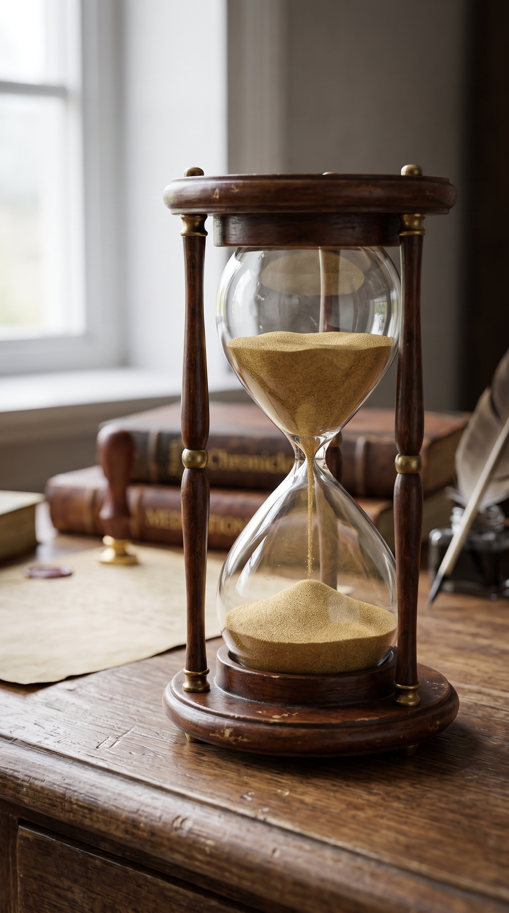

El Copista de Relojes: El Tiempo Perfecto de Dios

En un pequeño taller escondido entre callejones antiguos, vivía un viejo maestro relojero llamado Elías. Era famoso porque no fabricaba relojes comunes; él reparaba piezas únicas que la gente daba por perdidas. Un día, llegó al taller un joven desesperado con un reloj de bolsillo bellísimo pero completamente destrozado por dentro. "Se cayó y se rompió el engranaje principal", dijo el joven. "He intentado forzar las agujas para que sigan girando, pero solo logré doblarlas. Necesito que funcione ya, mi futuro depende de llegar a tiempo a una cita vital".
Elías miró al joven con compasión, tomó la pieza y la colocó bajo su lupa. Con paciencia infinita, comenzó a desarmarlo por completo, pieza por pieza, tornillo por tornillo. El joven, viendo el desorden de metal sobre la mesa, se impacientó: "¿Por qué lo desarma más? ¡Así parece aún más roto! Solo péguele la pieza principal y déjelo andar". El maestro sonrió en silencio y continuó trabajando con delicadeza. Sabía que forzar un mecanismo dañado solo destruiría el reloj para siempre.
Pasaron las horas. Elías limpió el óxido invisible, enderezó las agujas dobladas por la fuerza del joven y fabricó desde cero el pequeño engranaje roto. El joven miraba el reloj de arena del taller, viendo cómo el tiempo se le escapaba, sintiendo que el silencio del maestro era una eternidad. Para él, todo era caos y retraso; para el maestro, cada segundo de espera era un paso preciso hacia la restauración perfecta.
Al caer la tarde, Elías colocó la última pieza, le dio cuerda y el reloj volvió a latir con un eco limpio y exacto. Al entregárselo al joven, este se dio cuenta de algo: la cita a la que tanta prisa tenía por llegar se había cancelado debido a un contratiempo en el camino. Si el reloj hubiera funcionado cuando él quería, habría estado en el lugar equivocado en el momento equivocado. La "tardanza" del maestro lo había protegido.
A veces, nuestras vidas se sienten exactamente como esa mesa llena de piezas sueltas. Pasamos por crisis, pérdidas o rupturas, y en nuestra desesperación intentamos forzar las agujas de nuestro destino para que las cosas sucedan "ya". Le reclamamos al Creador por qué permite que todo se desarme o por qué tarda tanto en responder a nuestras oraciones, asumiendo que el silencio significa que se ha olvidado de nosotros.
Sin embargo, Dios no trabaja con la prisa de nuestra ansiedad, sino con la precisión de su propósito. Él prefiere desarmar nuestros planes humanos para sanar el óxido del corazón y reconstruirnos desde dentro. Si hoy sientes que tu vida está en pausa o en piezas, confía en las manos del Gran Maestro. Él no está retrasado; está diseñando tu mejor temporada, y su tiempo siempre es perfecto.